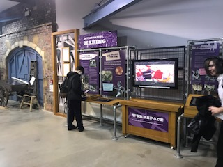

About Us
Located in one of the city’s oldest industrial districts, the museum stands on a man-made island over 900 years old.
Kelham Island Museum was opened in 1982 to house the objects, pictures and archive material representing Sheffield’s industrial story.
Our interactive galleries tell the story from light trades and skilled workmanship to mass production and what it was like to live and work in Sheffield during the Industrial Revolution.
Follow the growth of the steel city through the Victorian Era and two world wars to see how steelmaking forged both the city of today and the world!
Monday (only open during School Holidays):
10:00 - 16:00
Tuesday - Friday: 10:00–17:00
Sunday: 11:00–16:00
Saturday : 10:00 -16:00
FREE Entry
Free visitor parking is available at the end of the island, with accessible parking behind
the Bessemer (the large black structure) – you’ll see signs to direct you when you arrive.
See the River Don Engine in steam at 12pm and 2pm when the museum is open.
The onsite Island Café+Bar and The Millowners Arms traditional pub are both open
daily and offer a range of food and drink. You can enjoy the large social-distanced
beer garden with table service.
The museum is now operated by Sheffield Museums Trust, an independent charity
that operates six of the city’s leading museums and heritage sites.